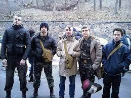
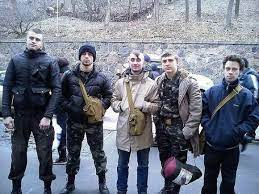

This is a story about five friends who desperately rushed to the front line on February 20 to pull the wounded out of sniper bullets and pick up fallen Maidan activists. Five Lviv residents have already been called "Institute Angels". The boys not only saved people's lives, but, without realizing it, performed a feat of dignity. At the risk of their own lives and health, they returned to the forefront again and again - sniper bullets bypassed them.
 

The boys are students of Lviv universities. All of them are from Lviv: Ihor Florko (18 years old), Pavlo Dyokin (19 years old), Andriy Sedler (20 years old), Mykola Prytula (20 years old), Ihor Halushka (18 years old). The guys have been friends for a long time, they are neighbors, they studied at the same school, went to the Maidan together, went to the Institute together and survived together!